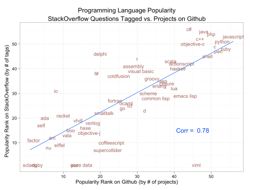

Week Three - Technical blog
15 Jun 2014
Why is JavaScript so popular?
JavaScript has been around for nearly twenty years, first being released with version 2.0 of the the Netscape Navigator web browser. The reigning browser champion, Internet Explorer, begun supporting JavaScript in 1996 (IE 3.0), which helped spread both user browser support and the number of websites making use of the new technology.
The advent of AJAX (Asynchronous JavaScript and XML) in 2005 allowed for data to be loaded in the background and then rendered to the page, removing the need for full-page reloads just to update content - this was another major milestone in the development of dynamic web content. While AJAX described a number of technologies working in unison, JavaScript was the backbone that brought each of them together.
Today, JavaScript has reached huge levels of popularity: being enabled in roughly 98% of all client browsers and in use in some form in nearly 90% of websites.
It has also experienced an explosion in popularity as a server-side language. For example, the Node.js is used to run huge web sites and applications such as eBay, Pay Pal, LinkedIn, Yahoo!, Uber, and many others.
Javascript as a whole has many selling points:
- Well supported: as well as being supported by every major web browser available, it also enjoys very strong support on mobile and tablet browsers which may not support other dynamic content, such as Flash
- Executed client-side: complex operations can be performed on the client-side at no load cost to the server
- Fast: there's no denying that JavaScript is fast. This is largely in thanks to the 'JavaScript engine race' of the previous few years, which saw the popular browsers compete to develop the fastest JavaScript engines
- Easy to debug: thanks to the likes of Chrome Dev tools and Firebug, developers can access incredibly detailed debug information to fix and optimize JavaScript code
- Easy to learn: this may be a bit subjective, but there is at least a huge variety of learning resources, thanks to JavaScript's popularity
- Vast number of libraries: while earlier versions of JavaScript required a lot of difficult code to perform seemingly simple actions, many libraries have been released over the years that have made things a lot easier. JQuery, for example, made it incredibly easy to access and manipulate the DOM
JavaScript is not without its problems, however:
- Accessibility: though it is largely a myth that screen readers do not use JavaScript, there are still roughly 2% of the population who do not have JavaScript enabled for whatever reason. If the site is heavily reliant on JavaScript, these users would receive a severely degraded experience when visiting
- Security: since JavaScript runs on the client-side, it presents a variety of security concerns that should be taken into account when developing
- Dynamically typed: this is another subjective drawback, but personally I prefer statically typed languages as they generally bring type errors to the surface at compile time rather than runtime
Regardless of the few drawbacks above, it's clear that JavaScript is among the most popular languages in the world: a 2012 analysis by RedMonk which mapped the popularity of a language on GitHub against its popularity on StackOverflow put JavaScript firmly on top.
